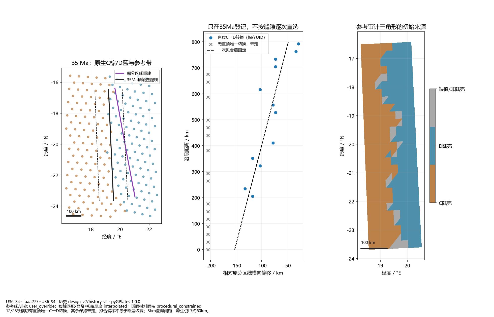
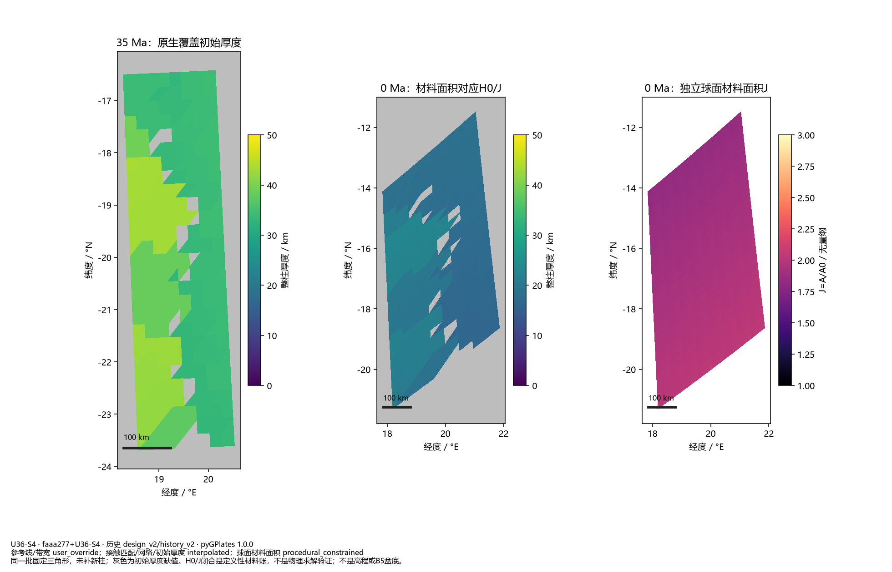
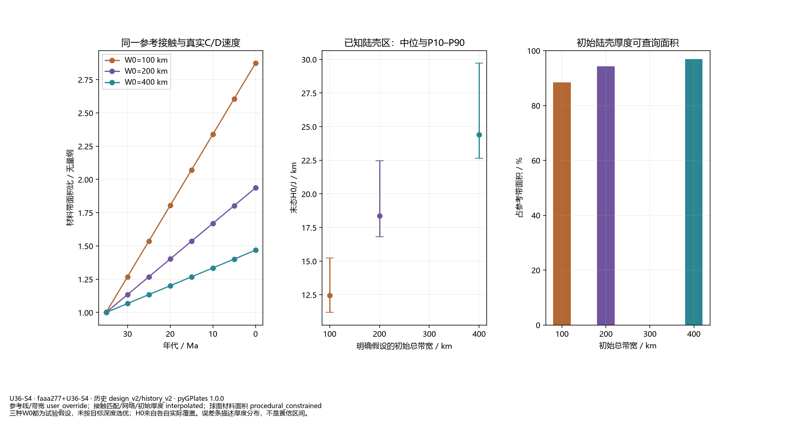
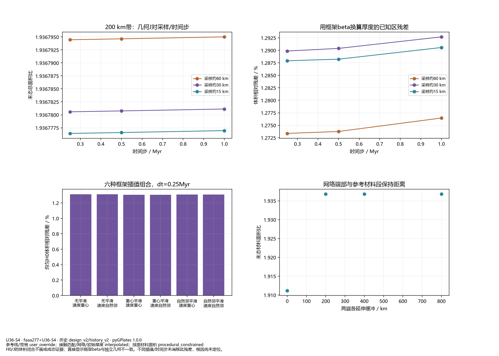
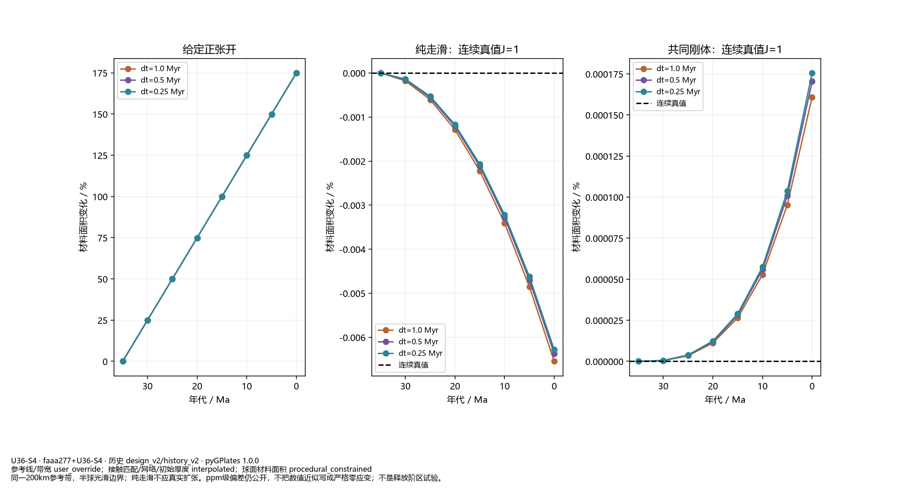

独立几何与来源审计；没有新地貌、没有B5沉降或阶段通过结论。

12/28条横切有直接唯一C→D转换；其余保持未定。拟合偏移不等于断层恢复；5km查询间距，原生仍L7约60km。

同一批固定三角形，未补新柱；灰色为初始厚度缺值。H0/J闭合是定义性材料账，不是物理求解验证；不是高程或B5盆底。

三种W0都为试验假设，未按目标深度选优；H0来自各自实际覆盖。误差条描述厚度分布，不是置信区间。

H0/J的体积闭合不画成成功证据；直接显示框架beta与独立几何不一致。不同插值/时间步未消除此残差，根因尚未定位。

同一200km参考带，半球光滑边界；纯走滑不应真实扩张。ppm级偏差仍公开，不把数值近似写成严格零应变；不是释放阶区试验。